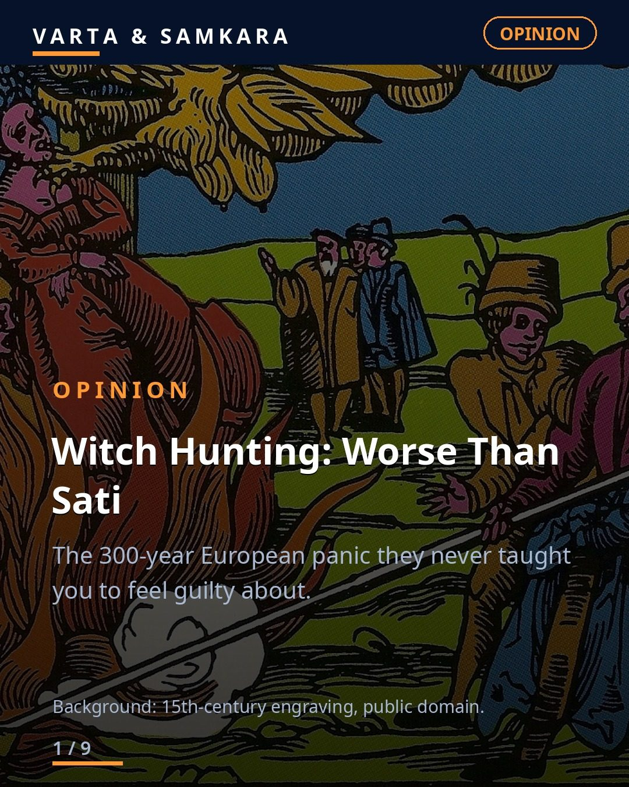
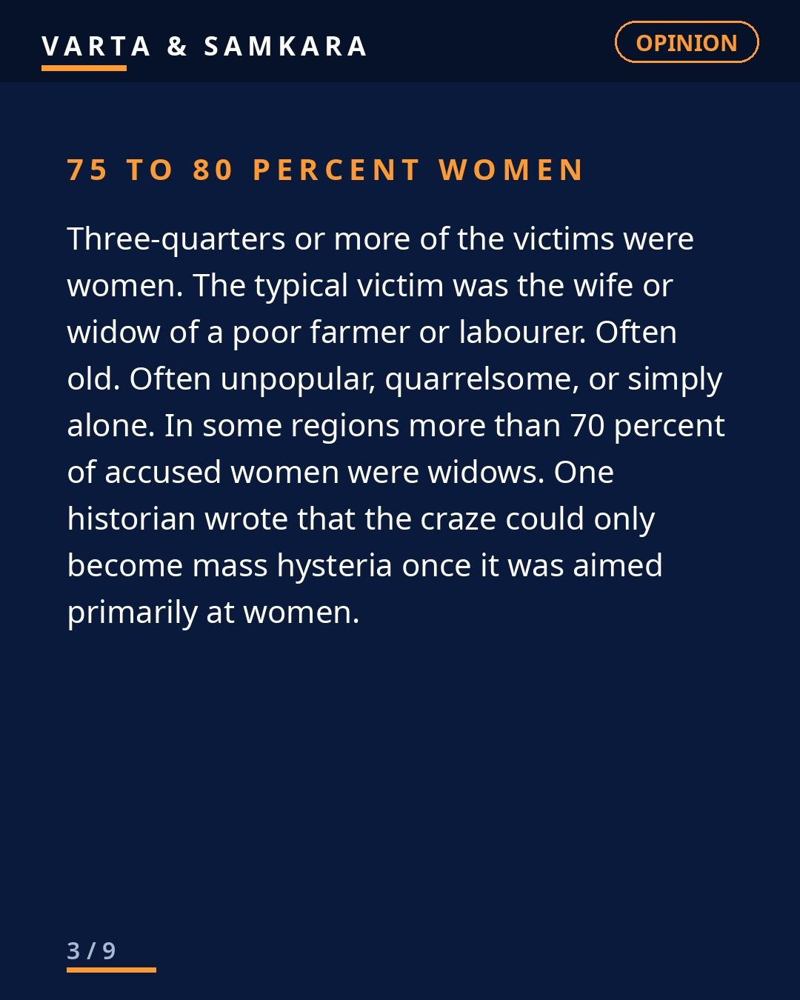
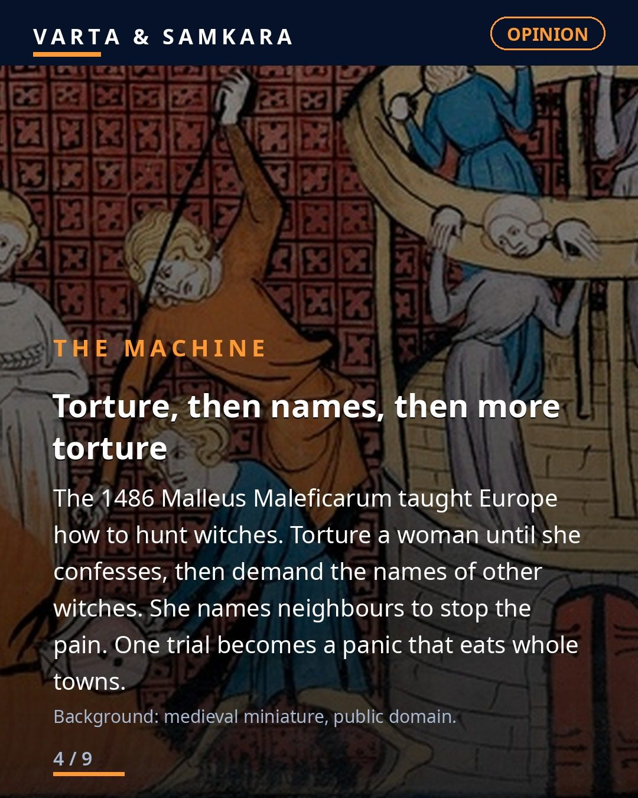
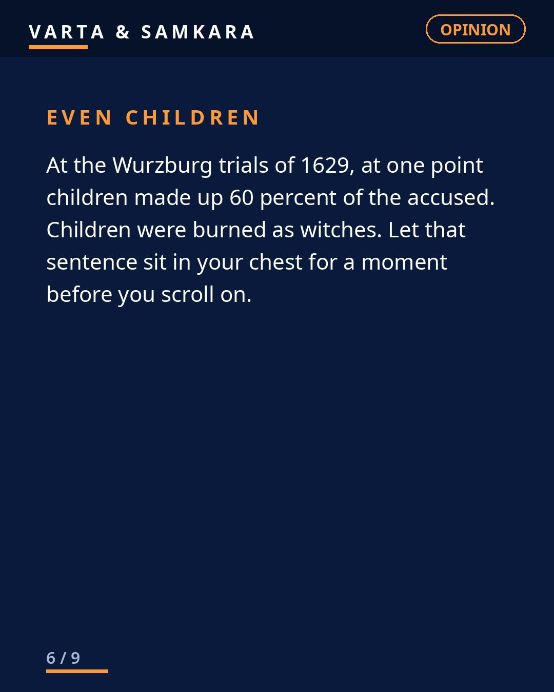
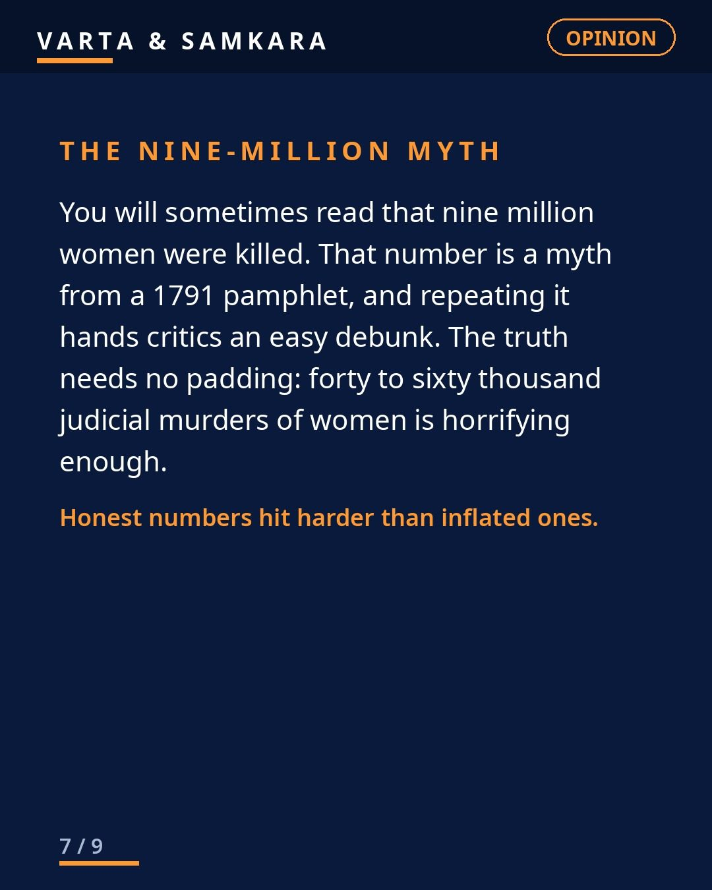
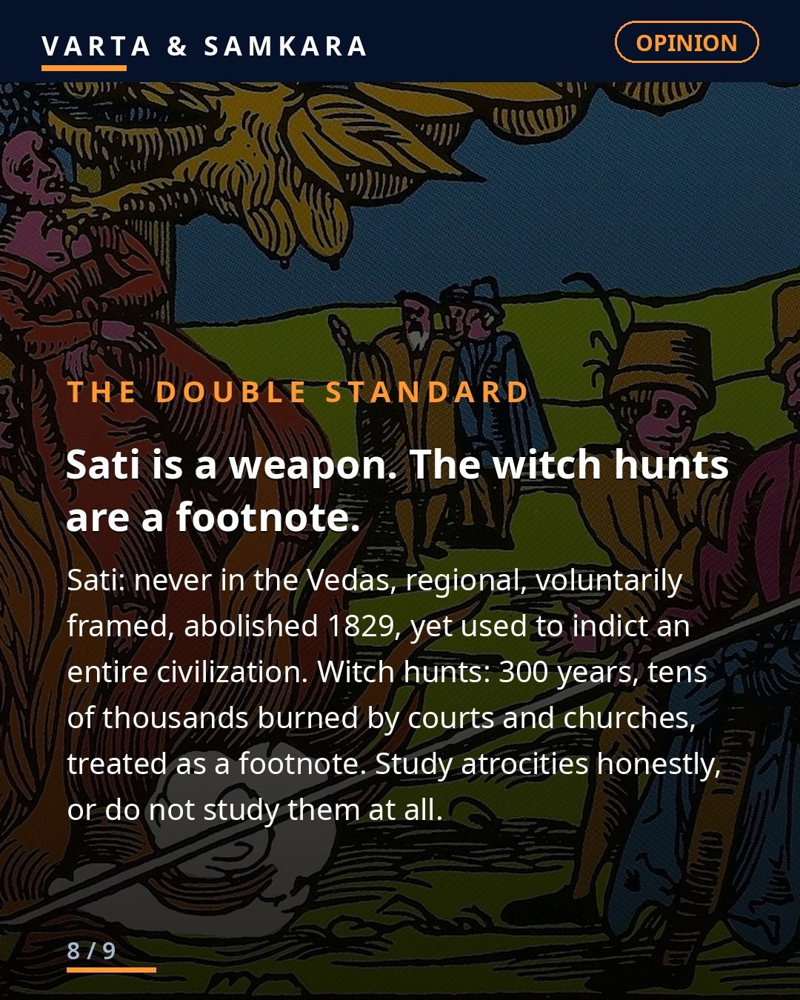

OPINION: Witch Hunting, worse than Sati.

Imagine Germany, 1629. You are a poor widow. Your neighbours blame you for the failed harvest. Men come to your door. Under torture you will confess to witchcraft, name your neighbours, and burn alive while your children watch.
This happened to 40,000 to 60,000 people across Europe between 1450 and 1750. That is the scholarly consensus, not an inflated number. 75 to 80 percent were women. The killing peaked between 1580 and 1630. At the Wurzburg trials, children made up 60 percent of the accused at one point. Children were burned as witches.
The 1486 Malleus Maleficarum gave Europe the manual. Torture extracted confessions, confessions produced names, names produced panics. Catholic and Protestant lands both ran trials. Secular courts ran them too.
And the same civilization lectures India about Sati. Sati was never in the Vedas, was regional, was framed as voluntary, and was abolished in 1829. Europe spent 300 years burning tens of thousands of women with the full machinery of church and state, and it is a footnote.
Feel the guilt. That is the correct response to history. Then ask why you were never taught to feel it.
Full blog on our website, link in bio.
Sources: scholarly consensus on witch-trial executions (40,000-60,000, 1450-1750); Goodare and Rapley (1998) on 75-80% women; Malleus Maleficarum (1486); Wurzburg trials 1629. Images: public-domain historical engravings via Wikimedia Commons (15th-century Malleus Maleficarum edition; 14th-century medieval miniature).
In pictures





See the original reel / carousel with motion graphics on Instagram.
View on Instagram